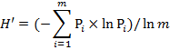
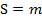

Summary
Calculates land cover diversity within each reporting unit and creates an output table. Metrics include Shannon-Weiner index, standardized Shannon-Weiner index, Simpson's index, and simple diversity.
Diversity metrics quantify landscape composition. These metrics are influenced by two components − richness, the number of different patch types present, and evenness, the distribution of area among the patch types. The four diversity metrics calculated in this tool are:
- Shannon-Weiner index (H) - a measure of the diversity of land cover types throughout the reporting unit. The index value increases with the number of land cover types in the reporting unit.

- Standardized Shannon-Weiner index (H') - standardizes the Shannon-Weiner index to account for the variety of distinct land cover classes present in the reporting unit.

- Simpson's index (C) - a measure of the evenness of the distribution of land cover classes throughout the reporting unit. Simpson's index is most sensitive to the presence of common land cover types. Simpson's index values range from 0 to 1, with 1 representing perfect evenness of all land cover types.

- Simple diversity (S) - a count of the number of distinct land cover classes present in the reporting unit.

- For all of the above,
- m = the number of different land cover types in the reporting unit
- Pi = the proportion of the reporting unit comprised of land cover type i
Usage
- This tool processes all polygons in the Reporting unit feature regardless of selections set. The ability to limit land cover calculations to only selected reporting unit polygons is not supported in this release.
- The Reporting unit feature is a zone dataset.
- A zone is defined as all areas in the input that have the same value. The areas do not have to be contiguous. The term "value" in this definition refers to the unique values in the Reporting unit ID field. Therefore, all polygons with the same reporting unit ID are treated as a single zone.
- When more than one polygon has the same reporting unit ID, the areas for each polygon are combined and metrics are reported as a single record in the Output table.
- As the Reporting unit feature is a vector dataset, ArcGIS will perform a vector to raster conversion during processing.
- The Reporting unit feature must not contain overlapping polygons. When overlapping polygons exist, the vector to raster conversion assigns the value of the top-most polygon to any overlapping area, thereby erasing the areas of underlying zones and resulting in flawed metric calculations.
- Use the Identify Overlapping Polygons utility to determine if overlapping polygons exist and parse the reporting unit feature layer into two or more feature classes or shapefiles in which no features overlap.
- To better control the vector to raster conversion, the tool defaults the Snap raster and the Processing cell size to that of the Land cover grid. These may be changed from within the tool.
- If a disparity exists between the extents of the Reporting unit feature and the Land cover grid, the user may wish to set the Extent in Environment Settings > Processing Extent to the smaller of the two to avoid unnecessary processing.
- Final output is written to the location specified in the Output table parameter. The Output table may be saved as a File Geodatabase Table, a dBASE Table, or an INFO Table.
- NOTE: For most consistent results, it is highly recommended that tool output be saved to a file geodatabase.
- When saving as a File Geodatabase Table, no extension is necessary for the Output table name. The output location must be a file geodatabase.
- When saving as a dBASE Table, include the .dbf extension in the Output table name. dBASE tables may not be saved in a file geodatabase.
- When saving as an INFO Table, no extension is necessary for the Output table name. INFO tables may not be saved in a file geodatabase. A new directory in the output directory called "info" is automatically created in which the INFO tables are stored. INFO tables have limited portability, so it is recommended that output not be saved as an INFO Table if data sharing is important.
- The user may elect to Add Quality Assurance Fields and/or Retain Intermediate Layers Generated During Metric Processing.
- Choosing to Retain Intermediate Layers saves the intermediate products to one of the following locations:
- When output is saved as a File Geodatabase Table, intermediate products are placed in the same file geodatabase.
- When ouput is saved as a dBASE Table or an INFO Table, a file geodatabase named "attilaScratchWorkspace" is automatically generated in the same output location specified for the Output table. Intermediate products are placed in the attilaScratchWorkspace file geodatabase.
- Field names in the Output table are as follows:
- H - The Shannon-Weiner index metric for the reporting unit.
- H_Prime - The Standardized Shannon-Weiner index metric for the reporting unit.
- C - The Simpson's index metric for the reporting unit.
- S - The simple diversity metric for the reporting unit.
Syntax
LCD (Reporting_unit_feature, Reporting_unit_ID_field, Land_cover_grid, Output_table, {Processing_cell_size}, {Snap_raster}, Select_options)
Parameter
|
Explanation
|
Data Type
|
Reporting_unit_feature
|
The vector polygon dataset that defines the reporting units.
|
Feature Layer
|
Reporting_unit_ID_field
|
The field in the Reporting unit feature layer that contains the unique ID for each reporting unit.
It may be an integer or a string data type.
|
Field
|
Land_cover_grid
|
The raster dataset representing land cover classes upon which diversity metrics will be derived within each Reporting unit feature.
The class input must be an integer raster layer.
|
Raster Layer
|
Output_table
|
The output reporting unit metrics table to be created.
It is recommended that the Output table be saved within a file geodatabase.
|
Table
|
Processing_cell_size (optional)
|
The Processing cell size for the zonal operation.
The default Processing cell size is the cell size of the input raster land cover data. Optionally, the user may select a different cell size.
|
Analysis Cell Size
|
Snap_raster (optional)
|
The raster that the cell alignment of the Land cover grid and rasterized Reporting unit feature layer will be matched to during processing.
The default Snap raster is the Land cover grid.
|
Raster Layer
|
Select_options
|
Two tool options are available to provide additional information:
- Add Quality Assurance Fields - Adds area fields to the Output table to facilitate quality assurance checking.
- Retain Intermediate Layers Generated During Metric Calculation - Saves the intermediate table and/or raster that is normally deleted after processing is complete.
|
Multiple Value
|
Credits
Shannon, C. E. (1948). A mathematical theory of communication. The Bell System Technical Journal, 27, 379-423.
Simpson, E. H. (1949). Measurement of diversity. Nature, 163, 4148, 688-688.
Environments
Current Workspace, Scratch Workspace, Output Coordinates same as input, Processing extent min of inputs,